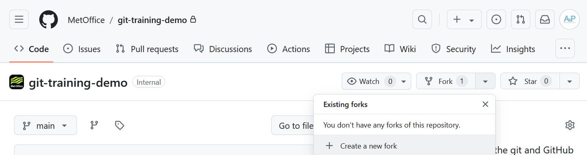
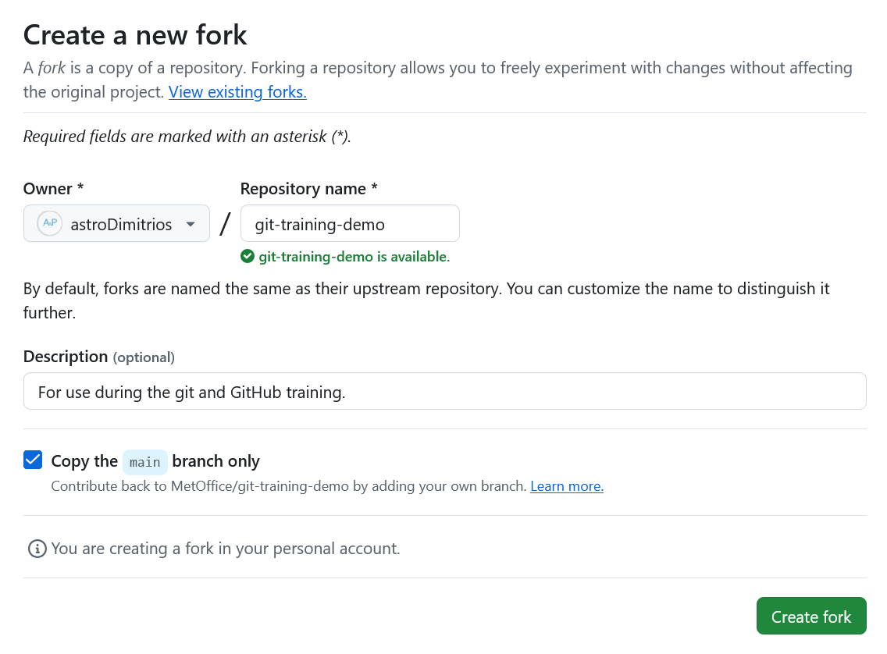
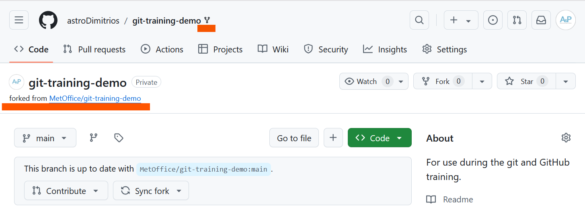
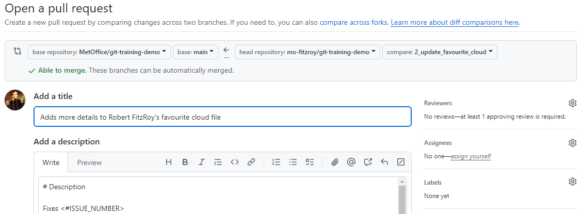
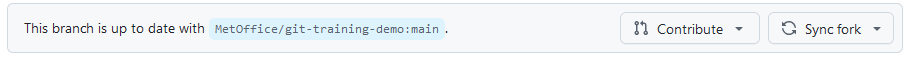

Forks
Last updated on 2026-06-10 | Edit this page
Overview
Questions
- What is a fork?
Objectives
- Create a fork of a repository.
- Contribute to the upstream repository using the fork.
Most open source projects require new collaborators to contribute via a fork of the repository. A fork is simply a copy of the repository that you make on the server, in our case GitHub, side. This avoids having to give repository permissions to every single collaborator1. You may only have one fork of a repository in your personal space or organisation.
In this episode we will create a fork and contribute a change to the main GitHub repository using the feature branch model we have been practising.
We will continue working on the git-training-demo
repository. Your permissions have been reduced so that you can no longer
push to the main Met Office repository, you will have to use a fork! The
main Met Office repository is now the upstream
repository for you fork.
Open an Issue
Open a new issue like you did earlier to add more detail to your favourite cloud file.
Create a Fork
On the repository Code tab click on the Fork dropdown arrow and then the + Create a new fork button:

GitHub will take you to the Create a new fork page. There is no need to edit anything on this page. Click on the green Create fork button:

You should now see your repository fork. The repository is marked as
a fork by the fork symbol next to the repository organisation and name
in the top navigation bar. Under the main repository name you can see a
link to the repository we forked from. The notification at the bottom of
the screenshot shows whether your forks main branch is up
to date with the upstream repository. If you have commits on your fork
not present upstream you can Contribute your changes
upstream via a PR. If your fork is behind the upstream repository you
can Sync fork to pull in changes from the upstream
repository.

Make Changes
To avoid overwriting your local version of the original Met Office
git-training-demo repository you need to clone your fork to
a different location.
To clone the repository into your Desktop folder:
BASH
$ git clone git@github.com:mo-fitzroy/git-training-demo.git ~/Desktop/mo-fitzroy-git-training-demoReplace ‘mo-fitzroy’ with the Owner’s username.
If you choose to clone without the clone path
(~/Desktop/mo-fitzroy-git-training-demo) specified at the
end, you will clone inside the git-training-demo
folder!
OUTPUT
Cloning into '~/Desktop/mo-fitzroy-git-training-demo'...
remote: Enumerating objects: 16, done.
remote: Counting objects: 100% (16/16), done.
remote: Compressing objects: 100% (16/16), done.
remote: Total 16 (delta 1), reused 11 (delta 0), pack-reused 0 (from 0)
Receiving objects: 100% (16/16), 5.01 KiB | 1.00 MiB/s, done.
Resolving deltas: 100% (1/1), done.Create your feature branch:
OUTPUT
Switched to a new branch '2_update_favourite_cloud'Add more detail to your favourite cloud file:
OUTPUT
# My Favourite Cloud
Light and fluffy cumulus.
Nice to sail under.Add and commit your changes:
BASH
$ git add cloud-mo-fitzroy.md
$ git commit -m "Adds more details to Robert FitzRoy's favourite cloud file"OUTPUT
[2_update_favourite_cloud 1b05798] Adds more details to Robert FitzRoy's favourite cloud file
1 file changed, 1 insertion(+)Push the changes to your GitHub fork:
OUTPUT
Enumerating objects: 5, done.
Counting objects: 100% (5/5), done.
Delta compression using up to 4 threads
Compressing objects: 100% (3/3), done.
Writing objects: 100% (3/3), 369 bytes | 123.00 KiB/s, done.
Total 3 (delta 1), reused 0 (delta 0), pack-reused 0
remote: Resolving deltas: 100% (1/1), completed with 1 local object.
remote:
remote: Create a pull request for '2_update_favourite_cloud' on GitHub by visiting:
remote: https://github.com/mo-fitzroy/git-training-demo/pull/new/2_update_favourite_cloud
remote:
To github.com:mo-fitzroy/git-training-demo.git
* [new branch] 2_update_favourite_cloud -> 2_update_favourite_cloud
branch '2_update_favourite_cloud' set up to track 'origin/2_update_favourite_cloud'.Open a Pull Request
Head back to your fork on GitHub and open a PR to contribute your
changes upstream to the main git-training-demo repository.
You must use the Fixes keyword this time to
automatically close your Issue when the PR is merged since you are
contributing the change from a Fork2.

The PR will now need to be approved and merged by your instructors.
Updating a Fork
Our fork is now behind the main upstream repository by one commit. We are going to update our fork. First we need to set the correct upstream remote in git.
Switch back to your forks main branch:
Now run:
OUTPUT
origin git@github.com:mo-fitzroy/git-training-demo.git (fetch)
origin git@github.com:mo-fitzroy/git-training-demo.git (push)This shows the GitHub remote links for our fork. To set the upstream remote we can run:
OUTPUT
origin git@github.com:mo-fitzroy/git-training-demo.git (fetch)
origin git@github.com:mo-fitzroy/git-training-demo.git (push)
upstream git@github.com:MetOffice/git-training-demo.git (fetch)
upstream git@github.com:MetOffice/git-training-demo.git (push)Now git knows about the forks upstream repository. We can fetch the changes to the upstream repository by running:
OUTPUT
remote: Enumerating objects: 6, done.
remote: Counting objects: 100% (6/6), done.
remote: Compressing objects: 100% (2/2), done.
remote: Total 4 (delta 3), reused 2 (delta 2), pack-reused 0 (from 0)
Unpacking objects: 100% (4/4), 1.10 KiB | 41.00 KiB/s, done.
From github.com:MetOffice/git-training-demo
* [new branch] main -> upstream/mainWe now have access to the upstream/main branch. To merge
in the changes on upstream/main:
And push:
OUTPUT
Total 0 (delta 0), reused 0 (delta 0), pack-reused 0
To github.com:mo-fitzroy/git-training-demo.git
f87bb5c..90808ab main -> mainYour forks main branch is now up to date with the
original git-training-demo repositories main
branch.
Sync via GitHub
This is equivalent of syncing your fork via the GitHub banner shown earlier:

If your fork is behind the upstream repository
GitHub will alert you on the banner. You can use the Sync
fork button to update your fork like we did above. After
syncing your fork this way run git pull on your local
main branch.
Summary Diagram
The workflow for forking is similar to that for branching. There are only a few differences after you’ve set up your fork for the first time:
- You should open Issues on the upstream repository not your fork.
- After merging in a PR on the upstream repository you need the added
step of syncing your forks
mainbranch.
sequenceDiagram
accDescr {A sequence diagram showing the steps for using
Forks with the branching model.}
autonumber
participant UM as upstream main
participant GHM as origin main
participant GHF as origin feature
participant M as main
UM ->> UM: #f
Note over UM: Open an Issue for the change
UM -->> GHM: #f
Note right of UM: First time: Fork the repository
GHM -->> M: #f
Note right of GHM: First time: git clone<br/>Then: git pull
create participant F as feature
M ->> F: Create a feature branch:<br/>git switch -c feature
loop
F ->> F: #f
Note over F: Develop changes:<br/>git add<br/>git commit
end
F -->> GHF: #f
Note left of F: Push to GitHub: git push<br/>The first push creates origin feature!
destroy GHF
GHF -->> UM: #f
Note left of GHF: Pull Request and then Merge.<br/>Delete origin feature branch.
UM -->> GHM: #f
Note right of UM: Sync your fork
GHM -->> M: #f
Note right of GHM: git pull
Note over F: Delete branch:<br/>git branch -d feature
box Met Office Repo - GitHub
participant UM
end
box Your Fork - GitHub
participant GHM
participant GHF
end
box Your Working Copy - Local
participant M
participant F
end- A fork is a server side, in our case GitHub, copy of the repository.
- Forks allow collaborators to contribute to the main repository without being given collaborator access or write permissions.
If the repository is private collaborators will need to be given access to see the repository and create a fork. The same is true for private repositories in organisations.↩︎
The GitHub Documentation has more information on linking PRs to Issues.↩︎